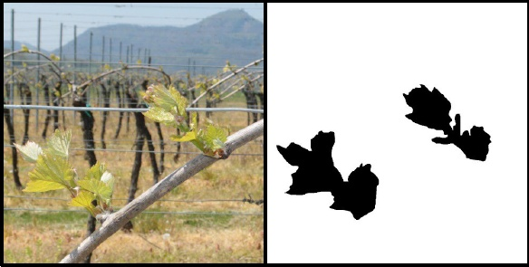
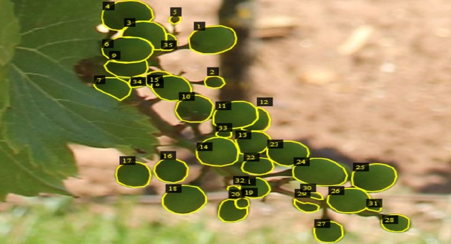
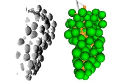
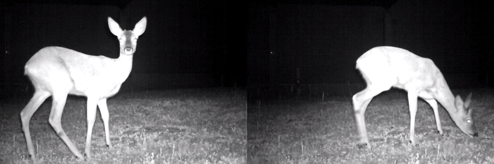
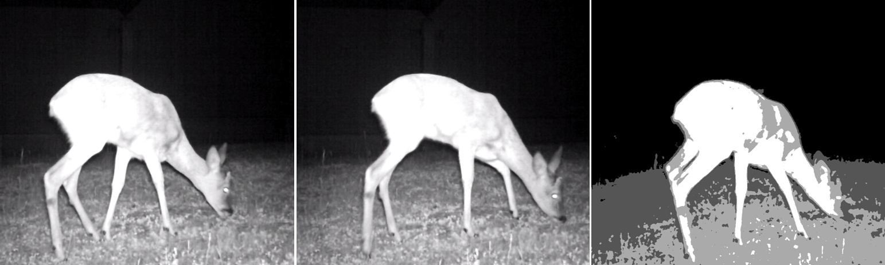

BA-INF 051 - Projektgruppe Intelligente Sehsysteme
PD Dr. Volker Steinhage
Dienstags, 14-16 Uhr, SR 1.047
Vorbesprechung: es wird keine zentrale Vorbesprechung geben. Stattdessen bitte ich interessierte Studierende, die die Module BA-INF 110 "Grundlagen der Künstl. Intelligenz" und/oder BA-INF 131 "Intelligente Sehsysteme" erfolgreich besucht haben, sich bitte per Email frühestmöglich und spätestens bis 15. März 2020 an mich zu wenden:
Themen:
|  | Instance Segmentation - Anwendung: CNN-basierte visuelle Erkennung und Lokalisierung von Pflanzenorganen.
|
|  | Instance Annotation - Anwendung: CNN-basierte Annotation von Pflanzenorganen in Bildvorlagen.
|
|  | Semantic Labeling - CNN-basierte Segmentierung von 3D-Punktwolken
|
|  | Optical Flow - CNN-basiertes visuelles Tracking von Tieren in Kamerafallenclips
|
|  | Motion Stereo - Tiefenbilder von Tieren in Kamerafallenclips
|
| Home | News | Teaching | Projects | Publications | Team |